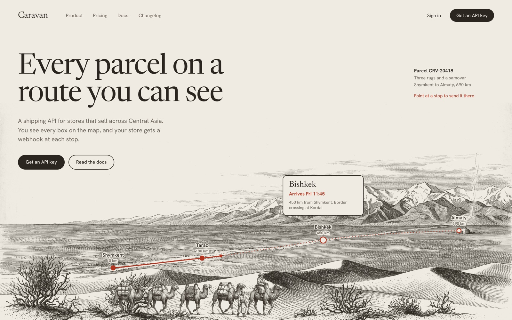
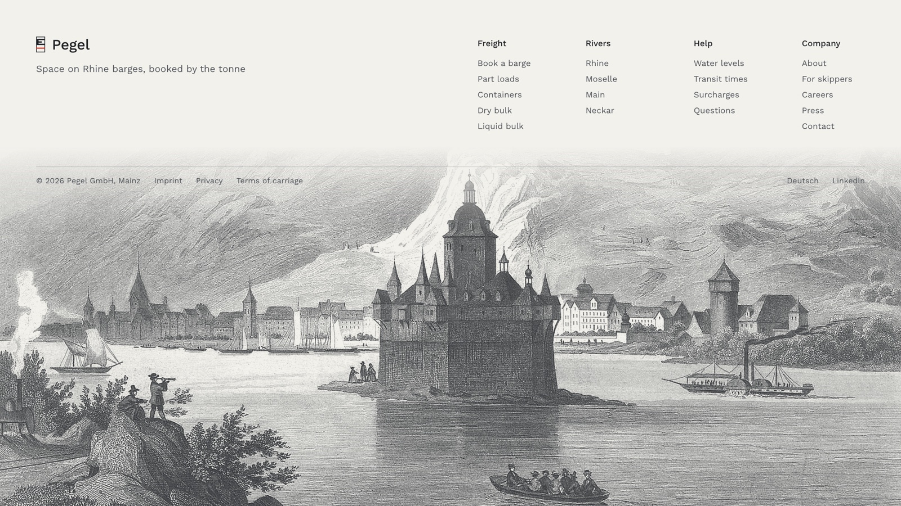
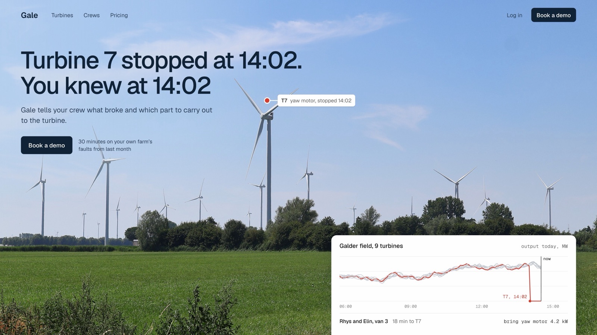
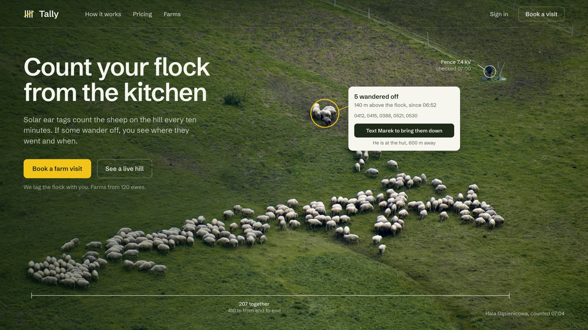
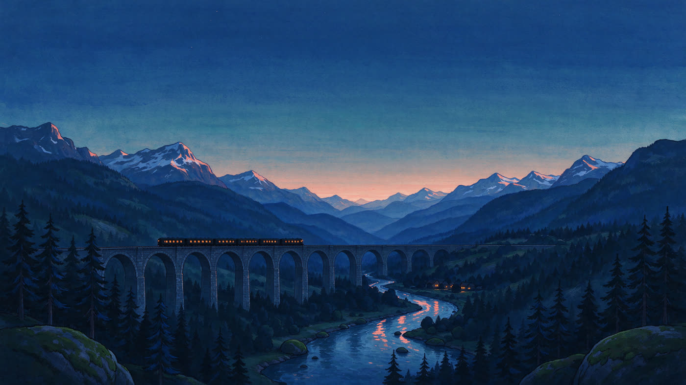
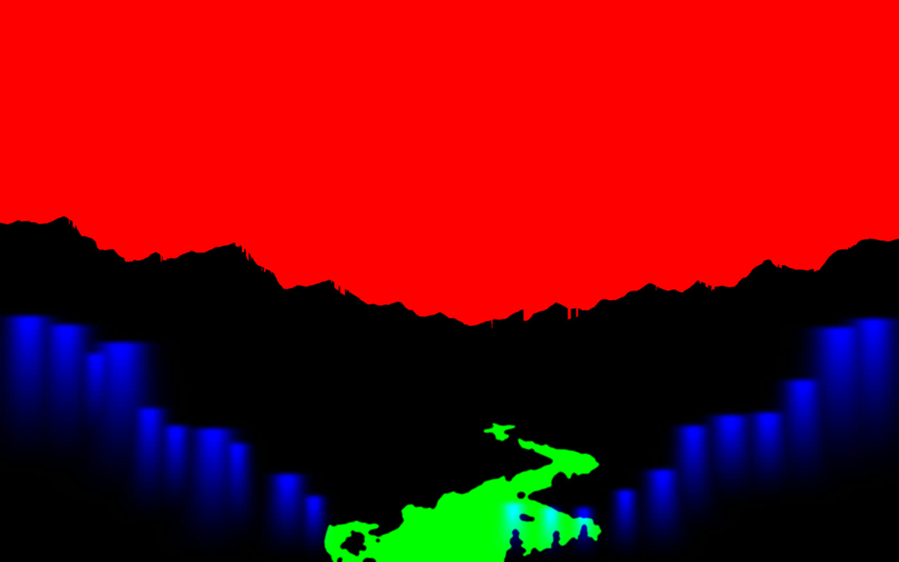
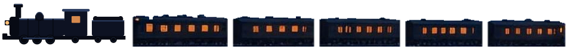

Landing pages for startups, down to the footer
I design and build the whole page around one picture from your product's world. Live in about a week, $1,500.
I'm in Kazakhstan and reply within a day
I design and build the whole page around one picture from your product's world. Live in about a week, $1,500.
I'm in Kazakhstan and reply within a day
Plates I to VIII
Concepts I designed and built myself, start to finish. Every one opens as a real page, so go and poke at them




Working files
It takes about a week. These files are from Couchette and Aspect, as they looked on the way
Day 1
A call, your copy, and the picture the page is built around

Days 2 to 4
A design you can click through, then your changes


See the sun before you make an offerSee where the sun falls before you buy
Day 5
It's live on your domain, and you can edit it yourself
Rate card
Fixed before we start. Half to begin, half before it goes live
3 days
About a week
2 to 3 weeks
Extras
I design the page and write the code myself, so what you approve is what goes live. You talk to the person who makes it.
Every page starts from one picture of your product's world, because a visitor reads a picture before a headline. Then I carry it down the page, and the footer gets as much care as the first screen.
New work goes up on X first: @sekenoov